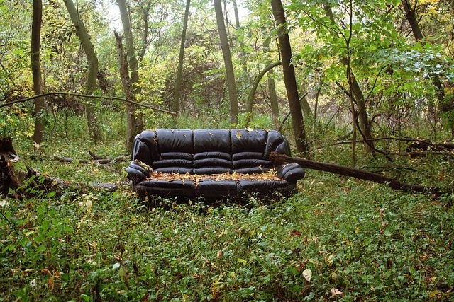

01- furniture & sofa removals

Whether it is one old sofa or a few complete furniture sets, when it is time for the old to make
its way out and the new to make its way in, it should not take ages for the old to make its exodus.
We offer a same-day collection of both furniture and sofas, including the heavy lifting! If you
prefer to conduct the throwing out yourself, ask us about our dumpster rental services!
We offer dumpsters of all shapes and sizes!